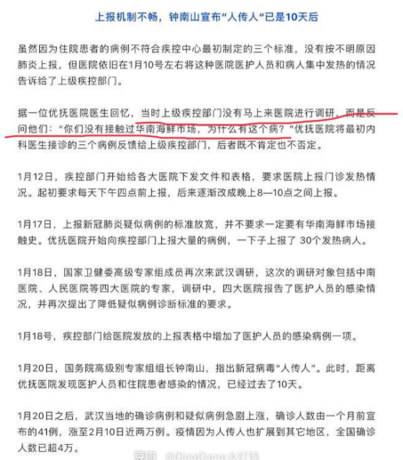

3. 这是一份重要的民间纪事(1)¶
1月份下旬，出于愤怒的情绪和记录的目的，我保存了一些图片。其实还保存了一些文章，但是后面电脑重装系统，就搞丢了。
如果正统历史是任人打扮的小姑娘，那么做一份野史与之对照，是有必要的。
为了保持客观，本篇不对任何内容做任何评判。
本篇只能提供“时间线”，不指出“谁功谁过，谁该负责”。
注：本篇内容材料十分有限，还有许多已经丢失的东西、没有收集到的东西，仅供参考。


3.2. 2020.1.1¶

3.3. 2020.1.3¶
3.4. 1.5¶

3.5. 1.7¶

3.6. 1.11¶
3.7. 1.12¶


3.10. 1.17¶